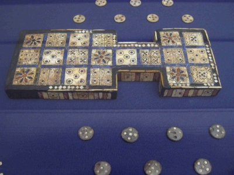
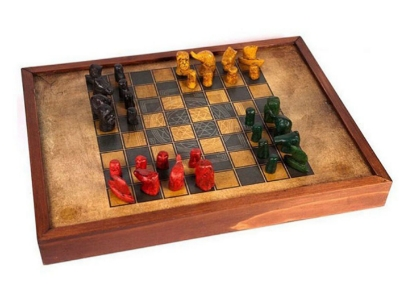

GAMES
GAMES GAMES
GAMES
Antes de serem como conhecemos atualmente, com gráficos impecáveis, e jogabilidade completamente imersiva, os games passaram por todo um desenvolvimento ao longo da história, iniciando com brincadeiras simples que os povos antigos costumavam fazer, ou os famosos jogos de tabuleiro que são lembrados e jogados até os dias atuais, como o xadrez por exemplo. De fato, quando se trata de entretenimento, o ser humano consegue ser bastante criativo, que tal conhecer um pouco dos meios que o homem criou para "dispensar o tédio" ao longo da história?
Desde o surgimento do homem, há registros de Jogos encontrados em paredes de cavernas de vários lugares do mundo. Este fato nos retrata a necessidade que o homem possuía desde aquela época, de colocar nas atividades um caráter lúdico, ou seja, tinha momentos para realizar brincadeiras, embora também executasse atividades físicas, como a luta, e a caça e pesca como meio de sobrevivência.
Podemos citar aqui, os jogos de expressão utilitária, recreativa e religiosa, que foram encontrados como forma de manifestação da cultura de alguns povos, como nos países da Ásia, da América pré-colombiana, da África, da Austrália, e entre os indígenas de ilhas mais longínquas do Oceano Pacífico.
A maioria dos jogos tradicionais sofreu modificações seja em relação à forma de brincar, as normas e regras, ao material, entre outros, no entanto, alguns vieram a compor o elenco das modalidades esportivas que foram disputadas nos Jogos Olímpicos da Grécia Antiga os quais tinham a finalidade de homenagear Zeus, a maior divindade do Olimpo, segundo a mitologia grega.Eram realizados de quatro em quatro anos e tinham o poder de interromper guerras, batalhas e combates.
Leia na íntegra em "Jogos e brincadeiras tradicionais - Uma construção coletiva".
Os jogos de tabuleiro, com certeza foram uma peça essencial no desenvolvimento dos jogos, estando presentes ao longo da história, e tendo registros de surgimento mais antigos datados em milhares de anos a.C., tendo sido criados por antigos povos africanos e asiáticos.
Os primeiros jogos de tabuleiro registrados são datados em cerca de 7.000 anos a.C., e o jogo mais antigo conhecido chama-se “Mancala” , com origem africana. Trata-se de uma família de jogos praticados com sementes, que têm um viés matemático, pois funcionavam em um sistema de contagem e captura de sementes do jogador adversário. O jogo é tão simples que o tabuleiro podia ser construído com buracos no chão de terra. Esse jogo é considerado o “pai de todos os jogos de tabuleiro”.

Tabuleiro de Mancala, jogo praticado com sementes, com registros datados em cerca de 7000 anos. O mancala, é uma família de jogos de tabuleiro, também chamado jogo de semeadura ou jogo de contagem e captura. Fonte.
Em 4.500 anos a.C., as raízes de outro jogo foram encontradas. Com o nome de “Jogo Real de Ur”, ele consistia em uma espécie de jogo de transporte de peças, em que era necessário mover as peças de um ponto ao outro do tabuleiro. Assim como o Senet, outro jogo semelhante, ele é conhecido como o inspirador de um jogo bem conhecido e atual: o Gamão.
Tabuleiro do "Jogo real de Ur", datado em mais de 4000 anos. O Jogo Real de Ur é de percurso, isto é, seu objetivo é entre com as peças no tabuleiro, fazer com que elas o percorram por inteiro e, finalmente, retirá-las. Fonte.
Leia na íntegra em "História dos Jogos de Tabuleiro".
Sem dúvidas o jogo de tabuleiro mais popular e o mais jogado do mundo, o xadrez foi responsável por influênciar a criação de muitos outros jogos de tabuleiro ao longo dos seus milênios de existência. O xadrez se tornou um dos jogos mais importantes ao longo da história, sendo o mais jogado até os dias atuais, sendo possível de ser jogado a qualquer hora e em qualquer lugar, através de aplicações instaladas em dispositivos móveis, disponíveis para download no Google Play e App Store, sendo possível encontrá-los em uma busca rápida em ambas as plataformas.
O xadrez, é considerado por muitos um esporte e tem mais de cinco séculos de histórias. Ele surgiu no sudoeste da Europa na segunda metade do século XV, durante o Renascimento Cultural. Há um consenso entre os historiadores de que a Índia é o mais provável berço do esporte. A principal diferença entre o jogo atual e seu antecessor ficava por conta da limitação de movimento das peças. O atual bispo era conhecido como elefante, enquanto a dama, peça mais poderosa do xadrez moderno, era conhecida como vizir.
Chaturanga é um antigo jogo de estratégia indiano que é comumente teorizado como o ancestral comum dos jogos de tabuleiro de xadrez, xiangqi, shogi, sittuyin e makruk. Fonte.
Mas foi na França, no século XVIII, que eventos de xadrez — já no formato que conhecemos atualmente — passaram a ganhar repercussão. Os mestres da época se enfrentavam em partidas épicas, cujo palco eram as coffee houses, casas de café e chá distribuídas pelas maiores cidades europeias. No século seguinte, os clubes de xadrez tiveram um rápido desenvolvimento e partidas por correspondência entre cidades tornaram-se comuns. Jornais passaram a destacar o jogo e publicações foram feitas contendo ideias avançadas dos mais célebres enxadristas da época.
Leia na íntegra em "Xadrez: Origem, regras e como ensinar na escola".